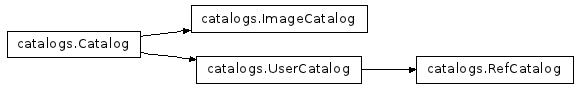

This module provides the classes used to generate and manage source catalogs for each input chip. Those positions can be transformed to undistorted sky positions, written out to files, or plotted using various methods defined for these classes.

Function which determines what type of catalog object needs to be instantiated based on what type of source selection algorithm the user specified.
| Parameters : | |
|---|---|
wcs : obj
catalog : str or ndarray
kwargs : dict
|
|
| Returns : | |
catalog : obj
|
|
Bases: drizzlepac.catalogs.Catalog
Class which generates a source catalog from an image using Python-based, daofind-like algorithms
Required input kwargs parameters:
computesig, skysigma, threshold, peakmin, peakmax,
hmin, conv_width, [roundlim, sharplim]
Generate source catalog from input image using DAOFIND-style algorithm
Bases: drizzlepac.catalogs.Catalog
Class to manage user-supplied catalogs as inputs.
Required input kwargs parameters:
xyunits, xcol, ycol[, fluxcol, [idcol]]
This class requires the input of a WCS and a source for the catalog, along with any arguments necessary for interpreting the catalog.
| Parameters : | |
|---|---|
wcs : obj
catalog_source : str or ndarray
kwargs : dict
|
|
Method to interpret input catalog file as columns of positions and fluxes.
Plots the source catalog positions using matplotlib’s pyplot.plot()
Plotting kwargs that can also be passed include any keywords understood by matplotlib’s pyplot.plot() function such as:
vmin, vmax, cmap, marker
Bases: drizzlepac.catalogs.UserCatalog
Class which manages a reference catalog.
Notes
A reference catalog is defined as a catalog of undistorted source positions given in RA/Dec which would be used as the master list for subsequent matching and fitting.
This class requires the input of a WCS and a source for the catalog, along with any arguments necessary for interpreting the catalog.
| Parameters : | |
|---|---|
wcs : obj
catalog_source : str or ndarray
kwargs : dict
|
|
Bases: object
Base class for keeping track of a source catalog for an input WCS
Warning
This class should never be instantiated by itself, as necessary methods are not defined yet.
This class requires the input of a WCS and a source for the catalog, along with any arguments necessary for interpreting the catalog.
| Parameters : | |
|---|---|
wcs : obj
catalog_source : str or ndarray
kwargs : dict
|
|
Trim sky catalog to remove any sources within regions specified by exclusions file
Primary interface to build catalogs based on user inputs.
Convert XY positions into sky coordinates using STWCS methods
Method to generate source catalog in XY positions Implemented by each subclass
Method which displays the original image and overlays the positions of the detected sources from this image’s catalog.
Plotting kwargs that can be provided are:
vmin, vmax, cmap, marker
Default colormap is summer.
Method to define how to interpret a catalog file Only needed when provided a source catalog as input
Write out the X,Y catalog to a file